01-saturn-landmark
土星地标
动态 · 4 状态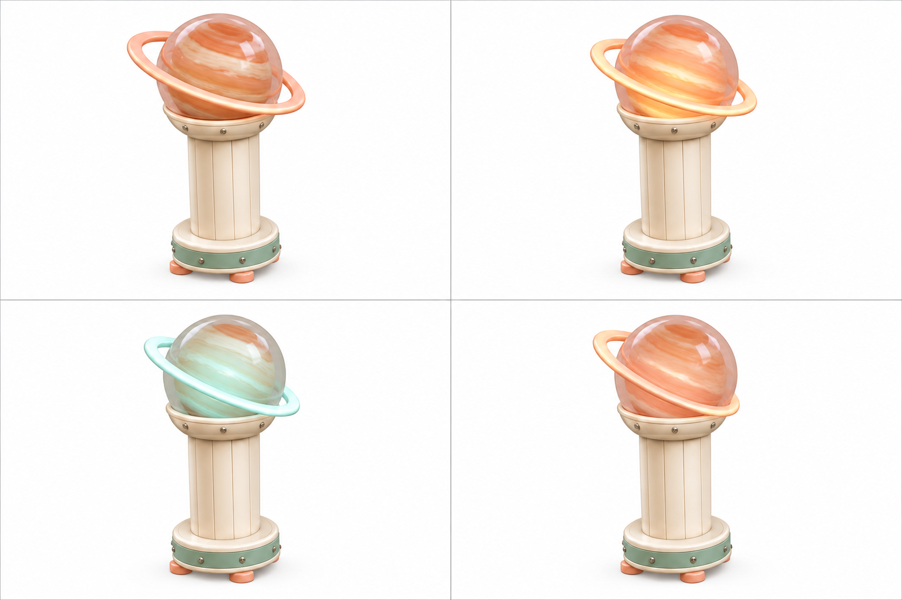
左上 → 右上 → 左下 → 右下：日间关闭 / 暖光迎宾 / 青色呼吸高点 / 蜜桃呼吸低点
上部球体与装饰环作为同一转子；底座不转。灯光强度用平滑呼吸曲线。
02-ferris-wheel
摩天轮
动态 · 4 状态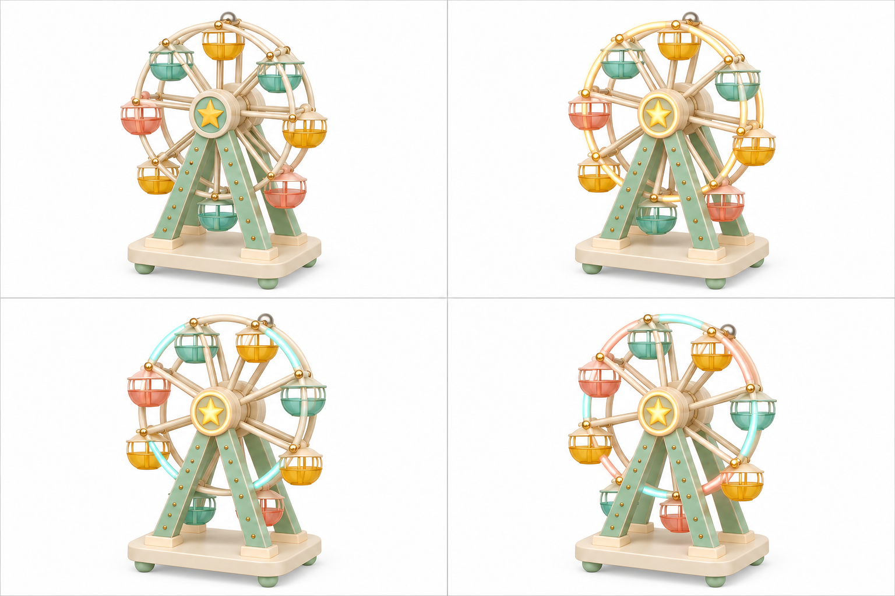
左上 → 右上 → 左下 → 右下：停止·灯灭 / 旋转22.5°·暖灯 / 旋转45°·青色追光A / 旋转67.5°·彩色追光B
主轮绕水平轮轴旋转；每个吊舱独立反向补偿，始终朝上。示意角度，不表示完整循环只转67.5°。
03-soda-cafe
汽水店
动态 · 4 状态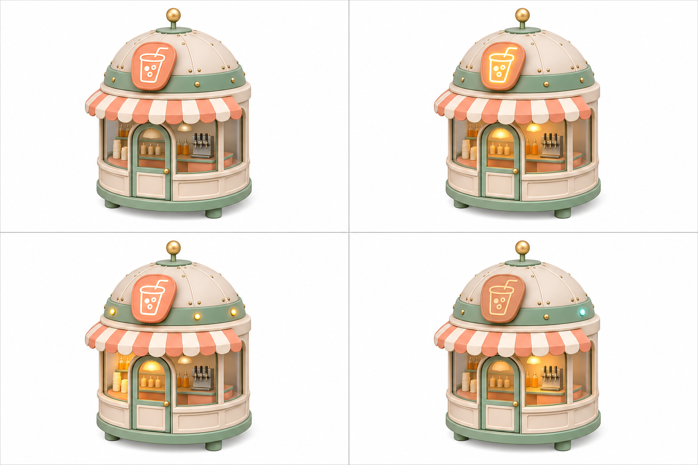
左上 → 右上 → 左下 → 右下：闭店·灯灭 / 营业·暖光 / 招徕·闪灯A / 招徕·闪灯B
建筑无刚体运动，只有招牌、室内分区和檐口灯分组控制。
04-moon-observatory
月牙观测塔
动态 · 4 状态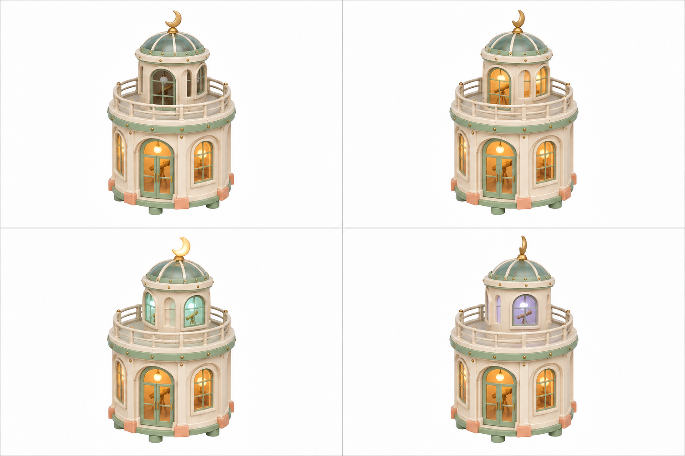
左上 → 右上 → 左下 → 右下：暂停·顶舱灯灭 / 巡视·30° / 巡视·60° / 巡视·90°
上部观测舱为新增运动设计；与下层阳台分网格。月牙随顶舱旋转，楼体固定。
05-glass-dome-pavilion
玻璃穹顶馆
动态 · 4 状态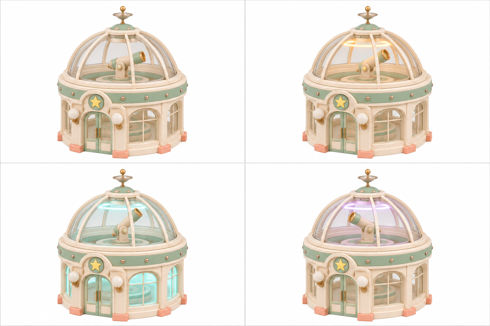
左上 → 右上 → 左下 → 右下：收泊·灯灭 / 低空观测 / 高空观测 / 回转扫描
外壳不动；内部望远镜使用水平转台和俯仰轴两个关节。
06-curved-shop
弧形商铺模块
动态 · 4 状态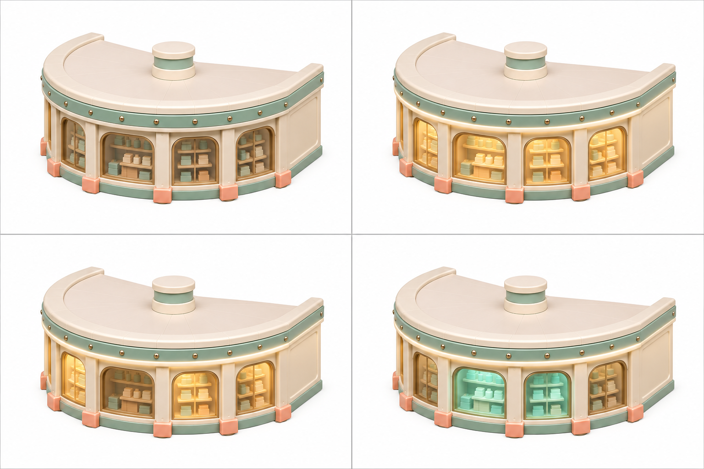
左上 → 右上 → 左下 → 右下：闭店 / 营业暖光 / 橱窗轮亮A / 橱窗轮亮B
不让建筑本体转动；橱窗分A/B组轮亮。灯条为设计新增材质区。
07-terminal-station
终点站房
动态 · 4 状态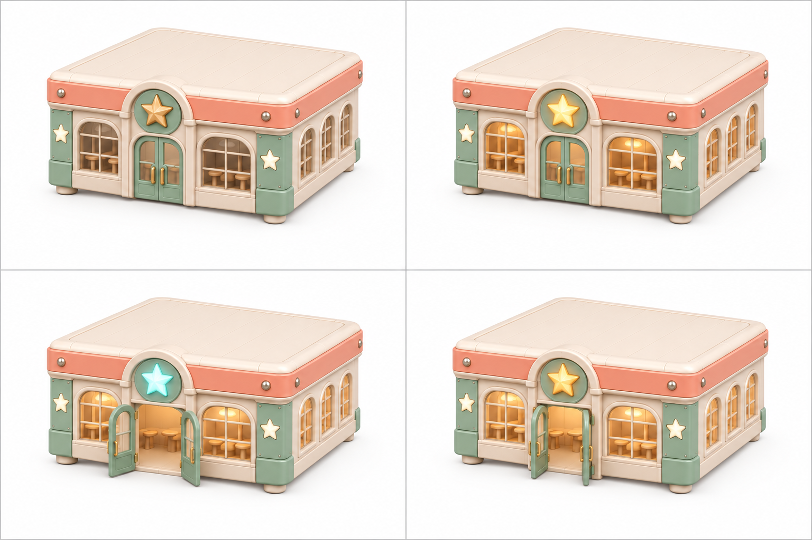
左上 → 右上 → 左下 → 右下：闭站 / 候客 / 开门迎接 / 缓慢关门
两扇门以外侧门轴铰接；正负角度以门轴局部坐标为准，双门向外打开。
08-service-robot
服务机器人
动态 · 4 状态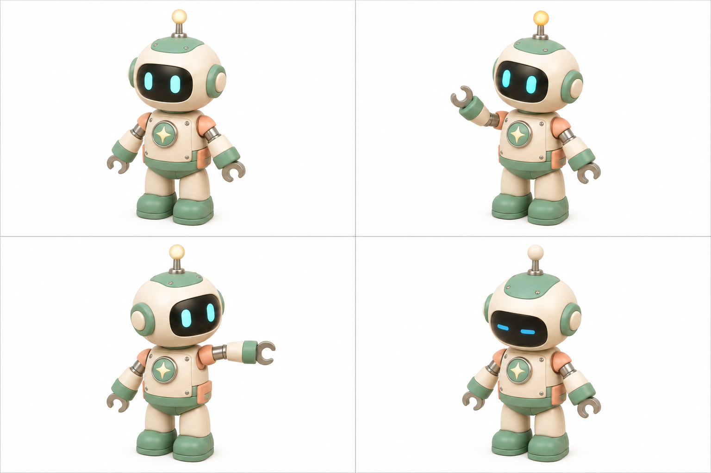
左上 → 右上 → 左下 → 右下：待机 / 挥手迎宾 / 指路 / 休眠
姿势为表演关键帧；模型生成仍使用中性A姿势。不要用不同状态重建多个机器人模型。
09-bench
长椅
静态 · 已跳过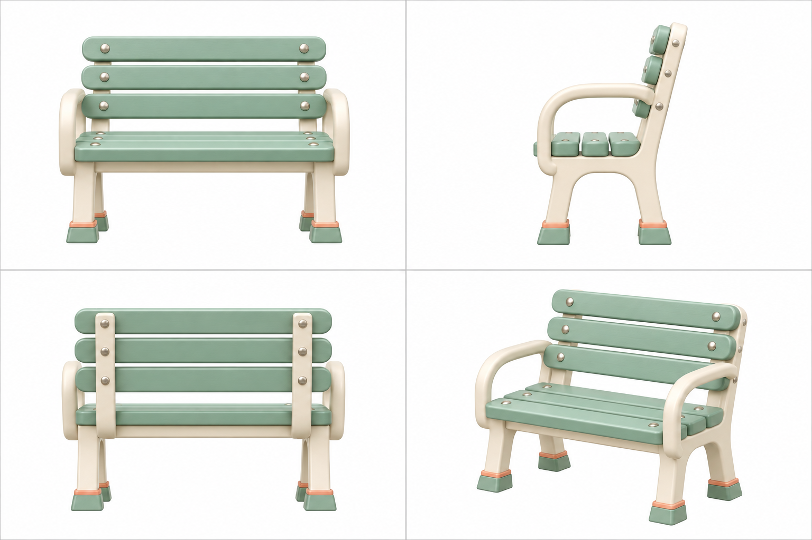
固定长椅，无活动机构；跳过动态设计。
固定长椅，无活动机构；跳过动态设计。
10-lamp
路灯
动态 · 4 状态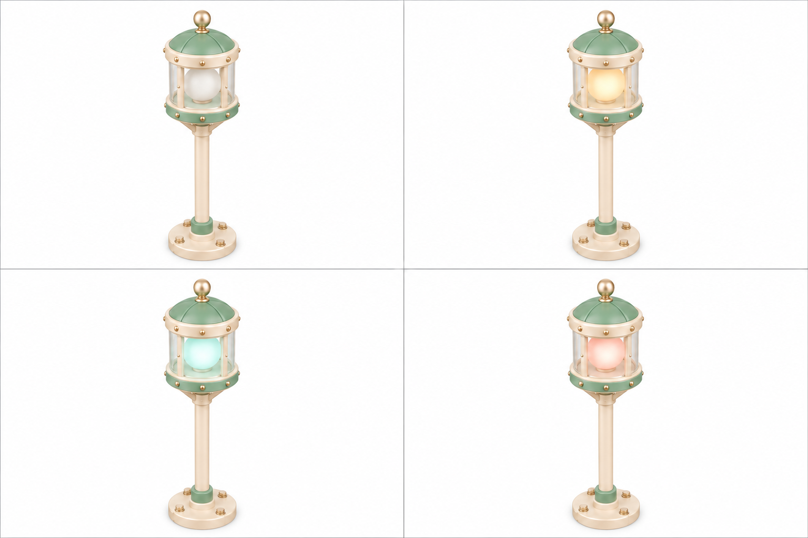
左上 → 右上 → 左下 → 右下：关闭 / 暖光常亮 / 青色提示 / 蜜桃提示
灯体固定。闪烁通过off与指定亮态切换；默认淡入淡出，不使用高速频闪。
11-planter
花箱
动态 · 4 状态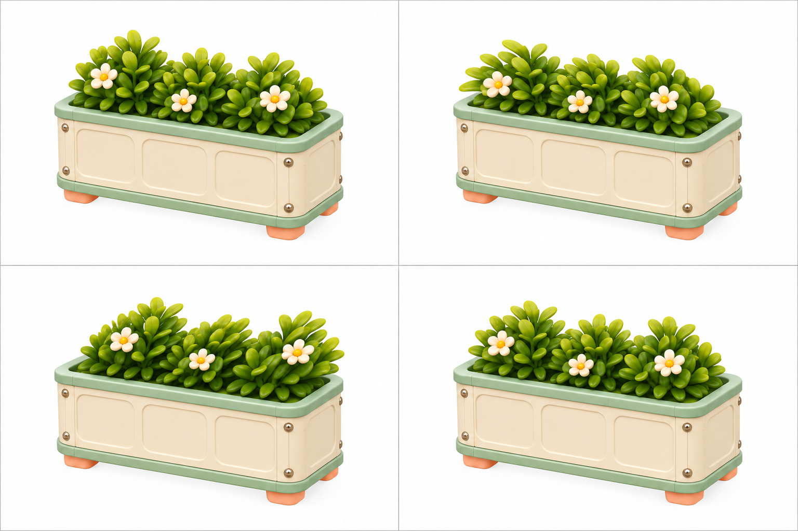
左上 → 右上 → 左下 → 右下：无风 / 向左摆 / 向右摆 / 回弹
使用顶点权重或少量骨骼形变；根部权重为0，叶尖为1。不可将整株当刚体连花箱一起摇。
12-umbrella-table
遮阳伞桌
动态 · 4 状态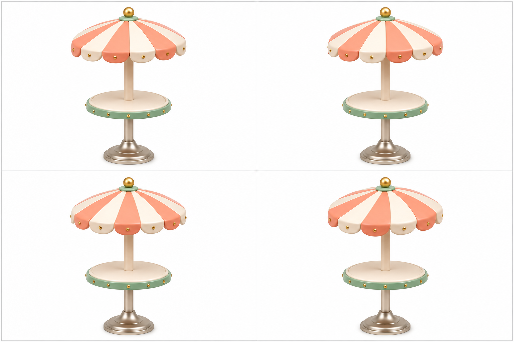
左上 → 右上 → 左下 → 右下：伞面0° / 伞面22.5° / 伞面45° / 伞面67.5°
伞顶加入轴承式旋转的设计设定；不是暗示普通固定遮阳伞会持续自转。桌面、伞杆、底盘不转。
13-cafe-chair
咖啡椅
静态 · 已跳过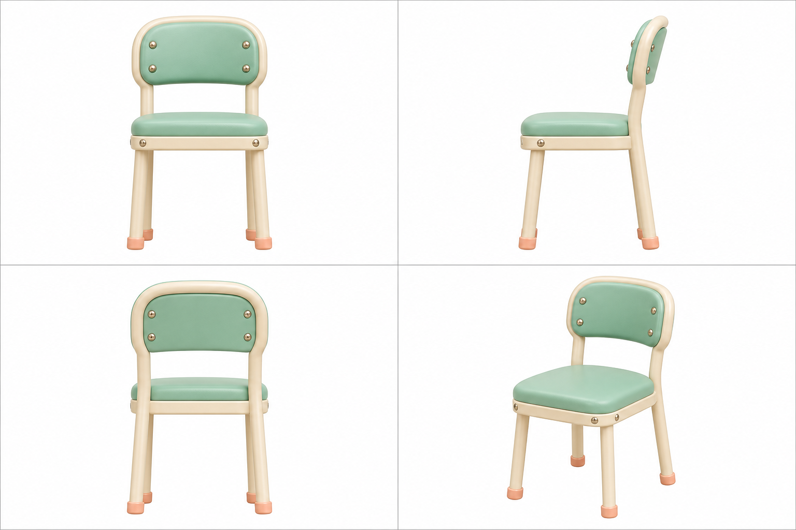
固定咖啡椅，无活动机构；跳过动态设计。
固定咖啡椅，无活动机构；跳过动态设计。
14-rocket-gantry
火箭装饰门架
动态 · 4 状态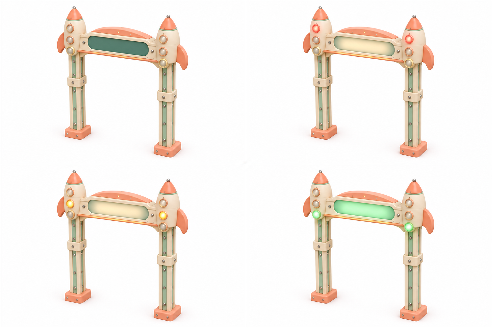
左上 → 右上 → 左下 → 右下：关闭 / 等待·红灯 / 准备·黄灯 / 出发·绿灯
红、黄、绿灯按事件状态切换，默认不自动循环倒计时；图示顺序是状态比较。
15-ornamental-tree
观赏小树
动态 · 4 状态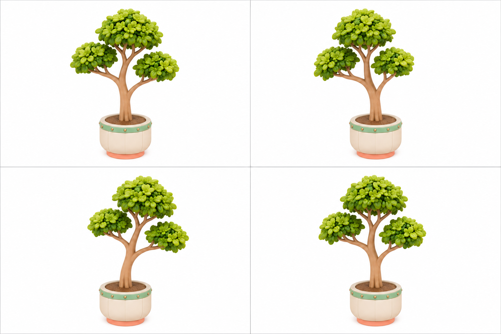
左上 → 右上 → 左下 → 右下：无风 / 左风阵 / 右风阵 / 余振
盆、根和树干底部固定；枝梢与叶团使用分层风动。树叶不凭空增减。
16-plaza-railing
广场围栏
静态 · 已跳过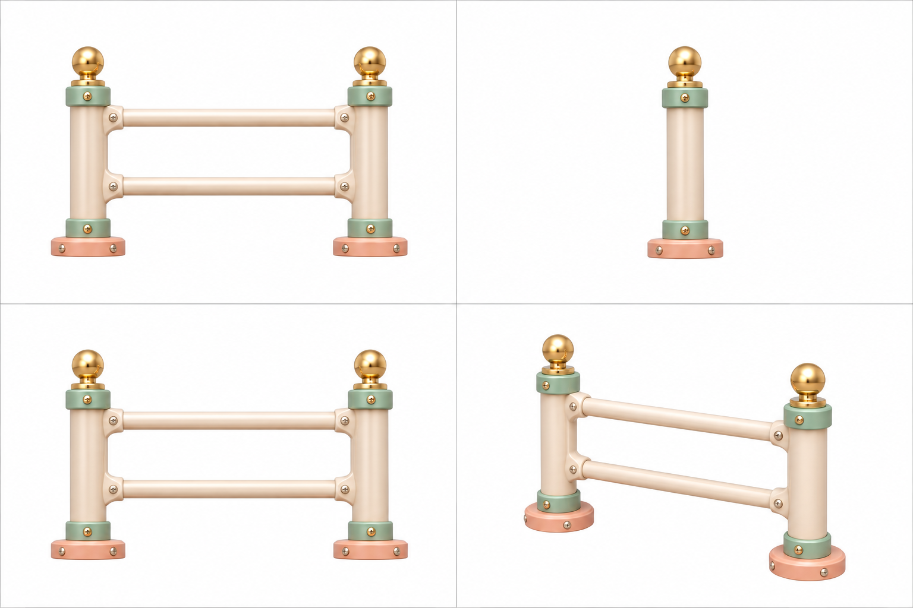
固定广场围栏，无活动机构；跳过动态设计。
固定广场围栏，无活动机构；跳过动态设计。